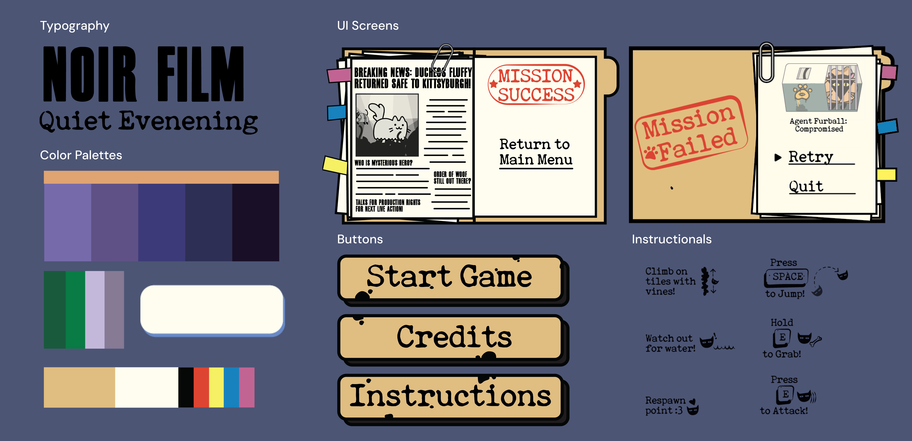

Narrative
Superspy Cats vs. Cyborg Dogs.
When world leaders’ cats vanish, Agent Furball must infiltrate the cyborg dogs'
secret lair to rescue Duchess Fluffy and stop The Order of the W.O.O.F.
before they replace all felines .

World Building
Setting the stage: the Secret Lair.
The 2D noir-style sewer lair of a cyborg dog society was brought to life through modular platformer units, and small easter eggs to emphasizing environmental storytelling.
UI Concept
Integrating the UI into the story.
The UI blends a spy-inspired aesthetic with accessibility, using redacted case file motifs for menus and type-stamp tutorials, and a distinct palette for legibility while immersing players in the game’s narrative.
